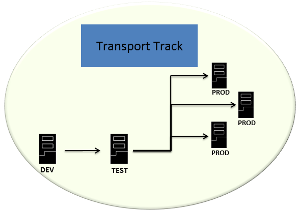

When you develop SAP HANA applications, you must decide on the transport scenario that you want to use and its impact on the setup of the transport landscape, as well as on whether or not you want to use change recording.
A transport track often consists of a development system, a test system, and one or multiple production systems.
The development system is characterized by ongoing development, many changes, a lot of versions, and so on. It is not used productively. After transporting the development entities to the test system, they can be tested there. After successful testing, the software can be transported to the production systems. In the production systems, the software is not changed. Instead, a defined state of the development entities is used productively in these systems.
There are different scenarios available for transport in SAP HANA application lifecycle management: Native SAP HANA transport and Change and Transport System (CTS) transport. The following table provides a quick overview of the scenarios available. Links to more information are located in the Related Information section of this topic.
|
Transport Scenario |
More information |
|---|---|
|
Native SAP HANA |
This scenario is suitable for the transport of native SAP HANA objects in which no ABAP development is involved and in which no other non-SAP HANA transports are done using CTS. This scenario is useful for smaller transport tracks with about 3-to-5 systems. You can use native SAP HANA transport to transport content from development to test and from test to production. Using native SAP HANA transport for the entire transport track, including the transport to the production systems, offers the following advantages:
Note
With native SAP HANA transport, performing an import means that you are on the target system and you pull an export from the source system using a configured transport route. Therefore, each import in a production system triggers a separate export from the test system. If you have multiple production systems, you must ensure that the test system remains unchanged while you are performing imports in the production systems. If the test system changes during this process, then the multiple imports into several production systems can result in different states of the software in these systems. Bear in mind that you need to trigger the import separately on each target system. If you cannot guarantee that the test system remains unchanged, you can opt to assemble the development into an installable archive on the test system, and install it in the production systems, as described in the Distribution using assembly and installation section of this topic. For more information on native SAP HANA transport, see Set Up and Use Native SAP HANA Transport. For more information on the setup of the transport landscape, if you have enabled change recording, see Setup of the Transport Landscape. |
|
CTS |
This scenario is suitable for the transport of native SAP HANA objects in system landscapes in which the Enhanced CTS is already in use. This means that CTS is used to manage transports of other non-ABAP and non-SAP HANA applications. This scenario is particularly well suited for transporting SAP HANA content as part of an SAP solution (such as SAP BI, Mobile, and so on), since you often need to create a connection between the SAP HANA content and other non-ABAP and non-SAP HANA development objects. CTS is integrated into the SAP tools for change control (Change Request Management and Quality Gate Management of SAP Solution Manager). You can use CTS transport to transport SAP HANA content through the transport track, from development to test and from test to production. Using CTS transport for the entire transport track, including the transport to the production systems, offers the following advantages:
Note
If you use CTS transport, you can only transport delivery units, because CTS transport does not support the transport of products. For more information on CTS transport, see Set Up and Use CTS Transport. For more information on the setup of the transport landscape if you have enabled change recording, see Setup of the Transport Landscape. |
In addition to the transport scenarios available, SAP HANA application lifecycle management offers the possibility to assemble the developed software and install it in the production systems. This way, you have a well-defined state of the software including all the metadata, such as product, delivery unit, and support package versions in the production systems.
You can use this option in the following situations:
You use CTS transport, but you need to transport products to the production system.
You use native SAP HANA transport and you want to guarantee maximum consistency in the production systems.
Your production systems cannot be reached using transport routes (CTS or SAP HANA application lifecycle management transport routes).
You can assemble the software in the test system or in an additional system, the consolidation system, for example. To do this, you must model the delivery unit or the product in the system in which you perform the assembly to supply the required metadata, such as version information and dependencies, for example. Assembly is supported for delivery units and not for individual objects or changelists. Once the metadata is available in the system you can perform the assembly using the commandline tool hdbalm.
After performing installation tests, you can install the assembled software in the production systems. You install the software separately in each production system.
You need to decide whether you want to record your changes in the development system and transport them using your transport track. The following table provides a quick overview of the change recording options. Links to more information are located in the Related Information section of this topic.
|
Landscape Option |
Description |
|---|---|
|
Change recording enabled |
The change recording function is delivered with the SAP HANA server installation and provides a light-weight and out-of-the-box method to keep track of your software changes. If you use change recording, you use SAP HANA Web-based Development Workbench or SAP HANA studio for your SAP HANA development. Your software changes are recorded in changelists and you use one of the transport scenarios described above to transport your development entities. If you use change recording, see Setup of the Transport Landscape for the recommended landscape scenarios. |
|
Change recording not enabled |
If you do not use change recording, you still use SAP HANA Web-based Development Workbench or SAP HANA studio for your SAP HANA development and you use one of the transport scenarios described above to transport your development entities. However, choosing this option means that you do not have any method to track changes, for example, if errors occur, you need to use a different means to find the source of the errors. |